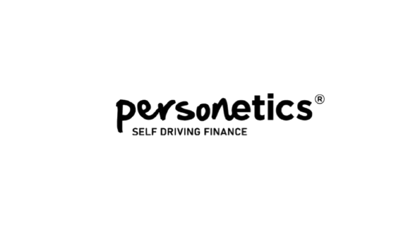
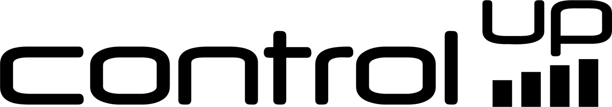
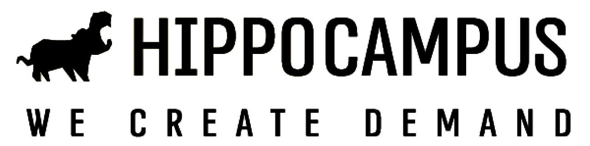
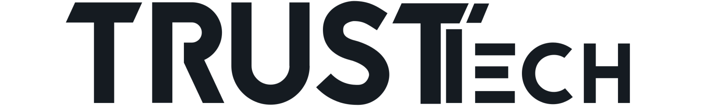
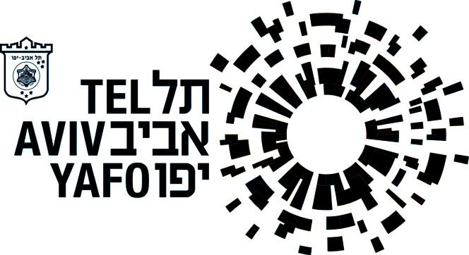
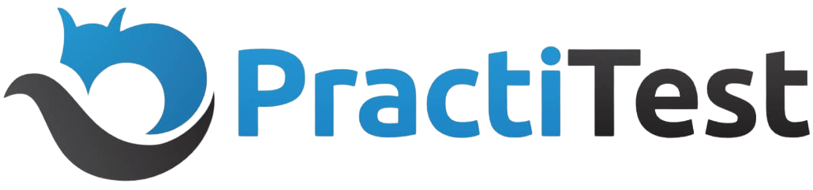
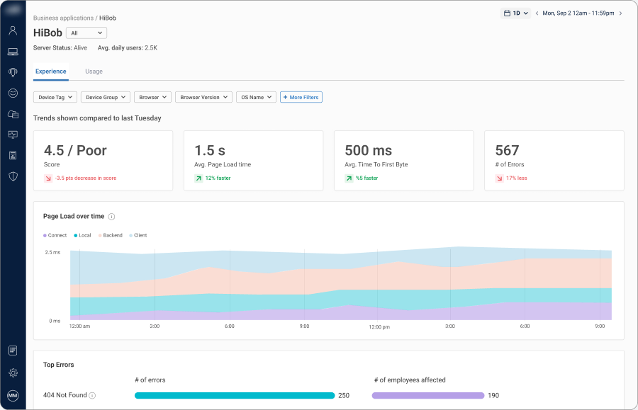
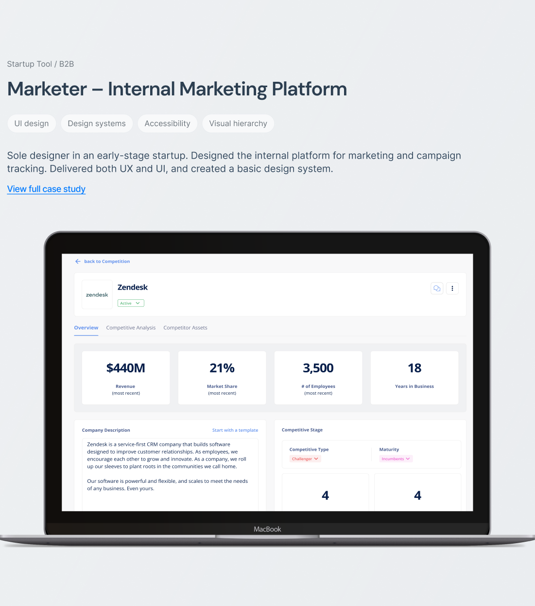
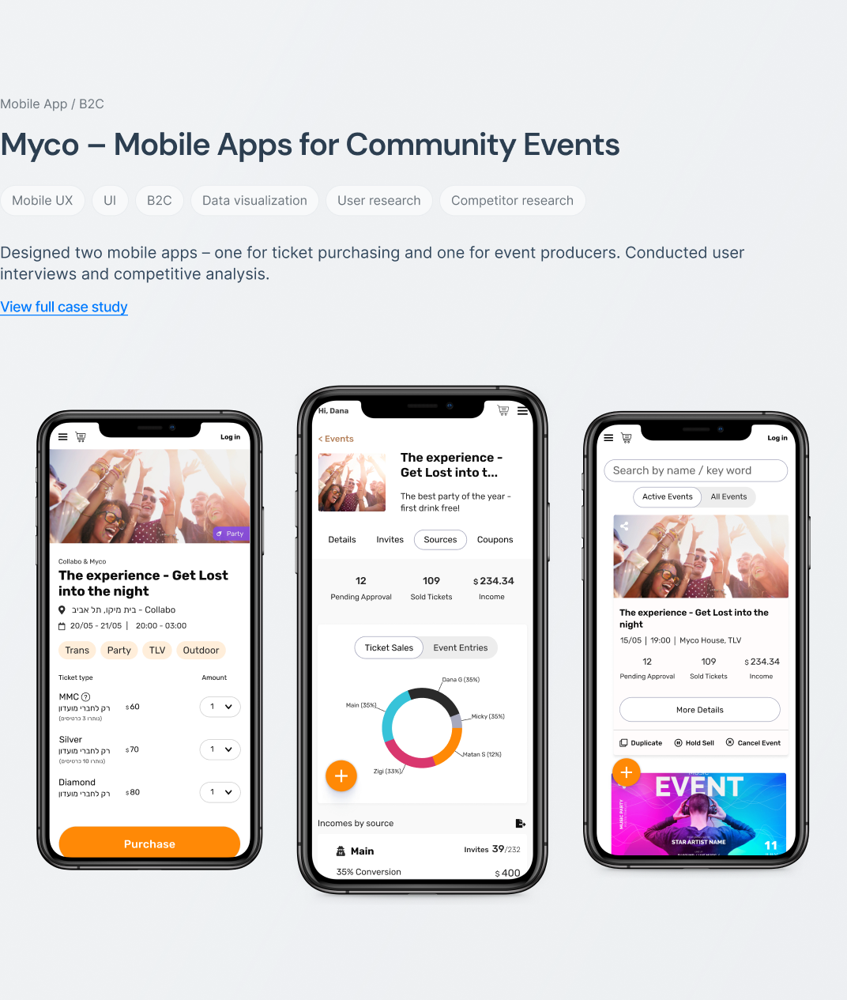
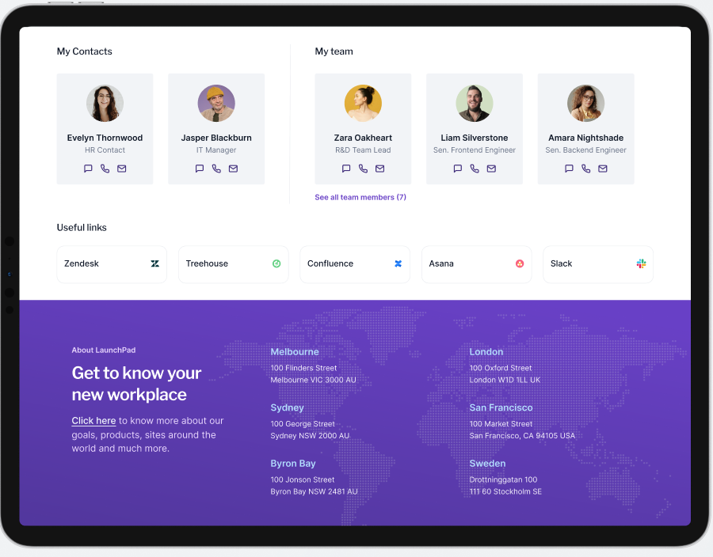

Complex workflows that need structure
Roles, states, edge cases, and dependencies become flows teams can build.
UX Research · Product Strategy
Research, product thinking, and systems thinking applied to complex workflows, competitive analysis, and AI-assisted design processes.
Trusted by teams at





Beacon
Roles, states, edge cases, and dependencies become flows teams can build.
Practical AI-assisted steps for handoff, design-system upkeep, and fast validation.
Competitor and market patterns become sharper decisions and fewer reinventions.
Components, rules, and docs that connect cleanly to implementation.
Requirements, constraints, and research shaped into complete, testable flows.
Tests, interviews, and product data turned into clear next steps.
Seven engagements across fintech, developer tools, enterprise HR, and consumer products.
Paper-based salary calculations reshaped into a reliable digital approval workflow, mapping the process, calculation logic, and stakeholder alignment.
Mobile UX across budgeting, savings, onboarding, and filters, with usability testing that made financial actions clearer for AI-powered banking.
Technical AI workflows for binary artifacts, clarified through product screens, design-system components, analytics, and research.
A modular dashboard for monitoring real-user experience in web apps, aligned around clear priorities and a sharper product direction.

A marketing-operations platform built end to end, with structure and reusable patterns for a growing product.

Two connected apps for ticket buyers and event producers, shaped through interviews, competitive research, and product flow design.

A template-based onboarding structure spanning countries, branches, and roles, built to scale and to maintain.

Collaborating with Dekel was instrumental in driving our projects at TrusTech forward. She consistently delivered results that exceeded expectations in both web and mobile products, always flexible and attuned to the changing needs of our organization, while ensuring our clients received exceptional service.
Best ever!! I've been working with Dekel for a few months. Results are amazing - an energy blast, relentless professional, an amazing addition to any team, an independent, pro-active, engaged and engaging professional.
Practical thinking from real product questions, not design theory.